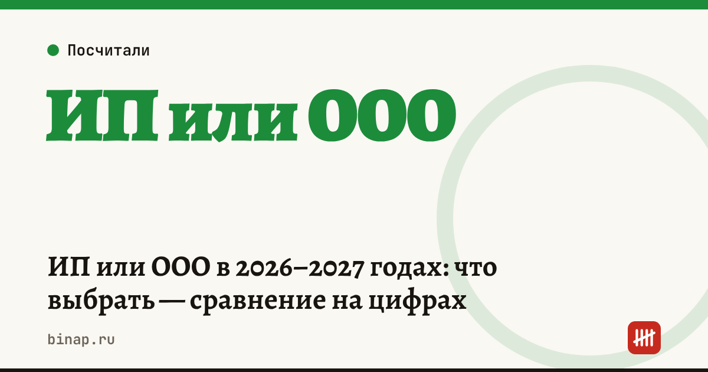

ИП или ООО в 2026–2027 годах: что выбрать — сравнение на цифрах

Если вы ведёте бизнес один, без партнёров и крупных рисков, ИП обычно проще и выгоднее: деньги со счёта можно тратить сразу, а взносы за себя уменьшают налог. ООО нужно, когда есть партнёры, высокие риски по обязательствам, планы продать бизнес или виды деятельности, где ИП нельзя. Ниже — сравнение по главным критериям и расчёт на одинаковой прибыли.
Коротко
- ИП отвечает по долгам бизнеса всем своим имуществом; участники ООО — в пределах своих долей, но директора и контролирующих лиц могут привлечь к субсидиарной ответственности при банкротстве.
- ИП платит взносы за себя: за 2026 год 57 390 ₽ плюс 1% с дохода сверх 300 000 ₽.
- В ООО директор — работник. С 2026 года взносы за директора считают минимум с МРОТ 27 093 ₽ в месяц, то есть не меньше 8 127,90 ₽ в месяц (по данным «Клерка»).
- Вывести деньги из ООО можно зарплатой или дивидендами — с НДФЛ. ИП тратит деньги со счёта без налога на «вывод».
- Регистрация ИП и ООО онлайн — без госпошлины.
Сроки, изменения и разборы для ИП и самозанятых — каждое утро в Telegram и MAX. Подпишитесь, чтобы не пропустить.
Сравнение по критериям
| Критерий | ИП | ООО |
|---|---|---|
| Ответственность | всем личным имуществом | в пределах долей; риск субсидиарной ответственности директора |
| Взносы за себя | 57 390 ₽ + 1% сверх 300 000 ₽ (2026) | за директора — минимум с МРОТ |
| Вывод денег | свободно со счёта | зарплата или дивиденды с НДФЛ |
| Партнёры | нельзя | можно, доли в уставе |
| Продажа бизнеса | только имущество и договоры | можно продать долю |
| Штрафы | как для должностного лица или ИП | для компании и отдельно для директора |
| Отчётность | проще | баланс и отчётность компании |
Расчёт: сколько остаётся владельцу
Расчёт редакции, упрощённо. Бизнес на УСН «доходы» 6%: выручка 3 000 000 ₽ в год, расходы 1 800 000 ₽, прибыль до налогов и выплат владельцу — 1 200 000 ₽. Сотрудников, кроме владельца, нет.
ИП: - взносы: 57 390 + 1% × (3 000 000 − 300 000) = 84 390 ₽; - налог: 3 000 000 × 6% = 180 000 ₽, после уменьшения на взносы — 95 610 ₽; - остаётся владельцу: 1 200 000 − 84 390 − 95 610 = 1 020 000 ₽.
ООО, директор — владелец с зарплатой МРОТ: - зарплата: 27 093 × 12 = 325 116 ₽, НДФЛ 13% — 42 265 ₽, на руки — 282 851 ₽; - взносы за директора: 30% × 325 116 = 97 535 ₽; - налог УСН: 180 000 ₽, компания с работником уменьшает его на взносы не больше чем на 50% — к уплате 90 000 ₽; - прибыль для дивидендов: 1 200 000 − 325 116 − 97 535 − 90 000 = 687 349 ₽, НДФЛ 13% — 89 355 ₽, на руки — 597 994 ₽; - всего владельцу: 282 851 + 597 994 = 880 845 ₽.
В этом примере ИП оставляет владельцу примерно на 139 000 ₽ больше. Разница растёт вместе с прибылью — но ООО может быть оправдано рисками и партнёрами.
Зарегистрировать ИП или ООО онлайн и сразу открыть счёт: ссылка
Когда всё-таки ООО
- У бизнеса несколько владельцев.
- Крупные договоры с риском претензий, которые могут превысить ваши личные сбережения.
- Нужна лицензия или вид деятельности, недоступный ИП (например, продажа крепкого алкоголя).
- Планируете привлечь инвестора или продать бизнес.
Что сделать
- Посчитайте по формулам выше на своей выручке и прибыли.
- Оцените риски: какие претензии к бизнесу возможны и на какие суммы.
- Проверьте, доступен ли ваш вид деятельности ИП.
- Выберите режим налогообложения сразу при регистрации — УСН «доходы» или «доходы минус расходы».
Сколько стоит регистрация — пошлина, подпись, счёт и касса. Как открыть ИП — пошагово онлайн. Взносы ИП на своих цифрах — калькулятор взносов.
Частые вопросы
Можно ли директору ООО не платить зарплату? С 2026 года, по данным «Клерка», взносы за директора коммерческой организации по общему правилу считают минимум с МРОТ за каждый полный месяц, даже если зарплата ниже или не начислена.
Как часто можно платить дивиденды? Не чаще раза в квартал, по решению участников и при соблюдении условий о чистых активах.
Можно ли перейти из ИП в ООО потом? Да: зарегистрировать ООО и перевести в него договоры и имущество. Сам ИП при этом закрывают или оставляют для другой деятельности.